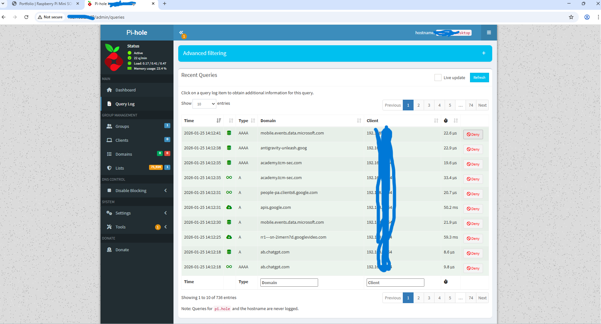

DNS Firewall + Traffic Monitoring using Pi-hole (Raspberry Pi 5 + Windows 11)
Status: Working Platform: Pi 5 + Ubuntu LTS Client: Windows 11
Pi-hole Dashboard
Local LAN only
Real-time Monitoring
tail -f /var/log/pihole.log
Core Outcome
Live DNS visibility + blocking
Overview
I built a small security monitoring lab where a Raspberry Pi 5 runs Pi-hole as a DNS firewall.
A Windows 11 client routes DNS queries through the Pi, allowing me to observe and block ad, tracker,
and unwanted domains while practicing SOC-style troubleshooting and log analysis.
Upgrade plan: expand monitoring and detection capabilities on top of this stable foundation.
Screenshot Evidence
This screenshot is sanitized: internal IP addresses and hostnames are masked before publishing.

Figure 1: Pi-hole Query Log showing live DNS traffic and blocked tracking domains from a Windows 11 client
routed through a Raspberry Pi 5 DNS firewall. Internal IP addresses and hostnames were sanitized for security.
Architecture
Traffic flow
Windows 11 Client
|
| DNS (A/AAAA queries)
v
Raspberry Pi 5 (Pi-hole DNS Firewall)
|
| Forward to upstream resolver
v
Internet
Key idea: if the client uses the Pi as its DNS server, Pi-hole can log requests and block known unwanted domains
before the browser connects.
Tech Stack
Hardware: Raspberry Pi 5
OS: Ubuntu LTS
Client: Windows 11
Core Tool: Pi-hole
Web: lighttpd
Diagnostics: ping, nslookup, ss, ufw, tail
Implementation Steps
1) Install Pi-hole on the Pi
curl -sSL https://install.pi-hole.net | sudo bash
Result: the installer outputs the dashboard URL and an initial password.
2) Secure the admin password
sudo setpassword
Changes the Pi-hole web interface password.
3) Allow HTTP on the Pi (if firewall is enabled)
sudo ufw allow 80/tcp
sudo ufw reload
sudo ufw status
4) Point Windows 11 DNS to Pi-hole and flush cache
ipconfig /flushdns
Validate with:
nslookup google.com
5) Real-time DNS monitoring on the Pi
sudo tail -f /var/log/pihole.log
Open websites on the Windows 11 client and watch DNS queries appear live.
Challenges and Fixes
Client isolation blocked PC to Pi access
Symptom: dashboard would not load from Windows, ping failed with “Destination host unreachable”.
Fix: moved both devices to a network that allows client-to-client communication.
Proof: ping started replying and the dashboard became reachable.
Windows DNS bypassed Pi-hole via IPv6
Symptom: Pi-hole Query Log stayed empty even though browsing worked.
Diagnosis: nslookup showed an IPv6 router DNS server instead of the Pi.
Fix: configured Windows to use the Pi as the DNS server (IPv4) and removed the bypass path on the adapter.
Proof: nslookup reported the Pi as DNS server and logs appeared.
Needed true real-time visibility
Symptom: web UI did not stream logs continuously.
Fix: used live log streaming from the Pi: tail -f /var/log/pihole.log
What I Learned
DNS fundamentals and why DNS is a high-value security control.
How DNS firewalls block unwanted domains before connections happen.
How to validate traffic paths using ping and nslookup.
Why IPv6 DNS can bypass controls if not accounted for.
How to monitor logs in real time like a SOC analyst.
Resume Bullet
Deployed a Raspberry Pi 5 DNS firewall using Pi-hole and routed Windows 11 DNS queries through it for monitoring and blocking.
Verified end-to-end DNS routing, secured admin access, and used real-time logging to analyze domain activity.
Resolved client isolation and IPv6 DNS bypass to restore visibility and enforce DNS controls.
Next Upgrade Ideas
Add a private resolver (Unbound) for improved privacy and control.
Add threat-focused blocklists and document before and after metrics.
Export logs for analysis and create weekly security reports.